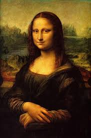
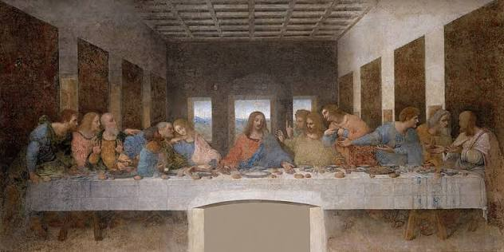
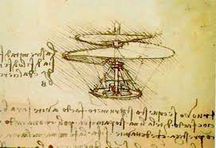
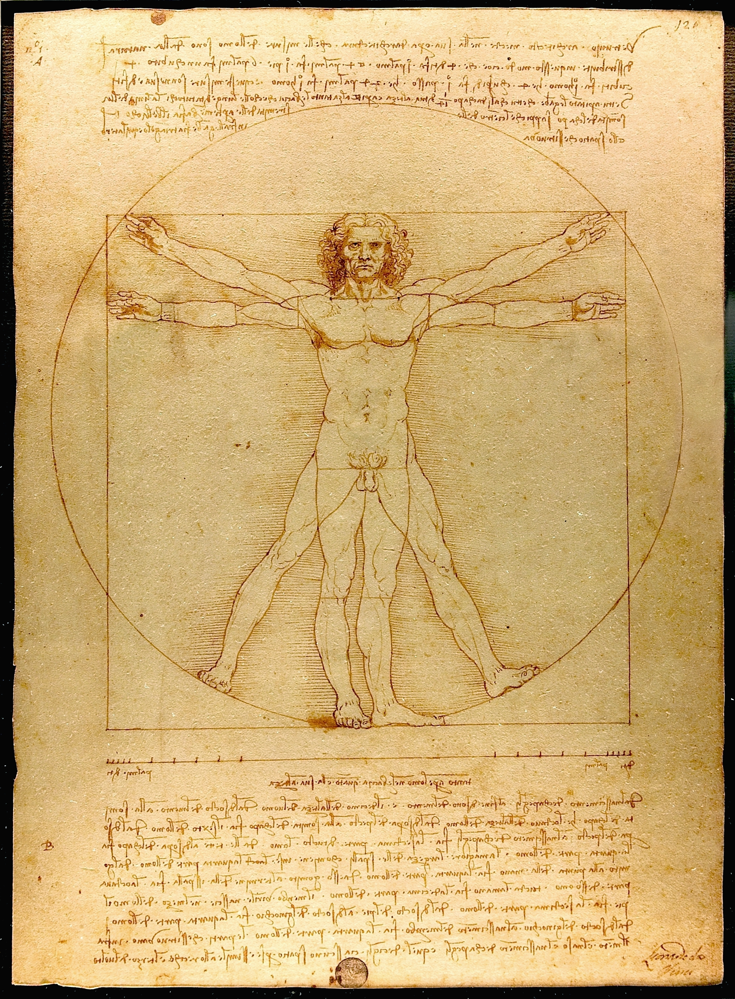

Kad pričamo o njegovom umjetničkom ostvarenju,
najpoznatija slika je čuvena Mona Liza
– možda i najproučavanije i najmisterioznije umjetničko djelo u istoriji čovječanstva.
Nastala negdje između 1503. i 1506. godine, ova slika prikazuje ženu zagonetnog osmijeha, za koju se
najčešće vjeruje da je Liza Gerardini, supruga firentinskog trgovca Frančeska del Đokonda (zbog čega je
u Italiji i Francuskoj zovu La Đokonda).
Ono što je Leonardu pošlo za rukom,
a što je zaprepastilo savremenike,
jeste savladavanje tehnike poznate kao sfumato.
Umjesto oštrih ivica i klasičnih linija, Leonardo
je koristio bezbroj slojeva prozirne boje kako bi postigao
mek, prirodan prelaz između sjenki i svjetlosti. Zahvaljujući
tome, izrazi njenog lica i onaj čuveni osmijeh djeluju živo – u
zavisnosti od toga pod kojim uglom gledate sliku, čini vam se da
se ona blago osmjehuje ili da taj osmijeh u potpunosti nestaje.
Pored same figure, pozadina slike je priča za sebe. Umjesto realnog
pejzaža Toskane, Leonardo je naslikao fantastičan, gotovo nestvaran
predio sa vijugavim putevima, planinama i mutnim rijekama koje se gube
u izmaglici. Koristio je takozvanu perspektivu vazduha, gdje su objekti
u daljini svjetliji i plućkastiji, čime je postigao nevjerovatan osjećaj dubine i prostora.
Ipak, dio njene slave leži i u nevjerovatnoj istoriji krađa i misterija.
Slika je stekla status globalne ikone ponajviše nakon što je 1911. godine
ukradena iz pariskog muzeja Luvr, što je izazvalo medijsku buru širom
svijeta i privuklo milione radoznalaca kada je konačno vraćena. Danas
iza neprobojnog stakla, u muzeju koji je posjećuju milioni ljudi godišnje,
Mona Liza i dalje ćuti, skrivajući tajne renesanse i genijalnosti svog tvorca
već više od pet vijekova.

Pored nje, tu je i monumentalna Tajna večera smještena u trpezariji
manastira Santa Maria delle Grazie u Milanu.
Umjesto da Isusa i apostole prikaže statično i mirno, kao što je bio običaj u
to vrijeme, Leonardo je odlučio da ovekoveči najdramatičniji mogući trenutak – sekundu
nakon što Isus izgovori: „Jedan od vas će me izdati“. Na platnu nastaje nevjerovatna
bura emocija, gdje je svaki apostol prikazan sa drugačijom gestikulacijom, šokom, nevjericom
i gnjevom na licu, čime je slika dobila energiju prave pozorišne predstave.
Ono što ovo djelo čini pravim umjetničkim čudom jeste upotreba
takozvane linearne perspektive. Sve linije prostorije, plafona i zidova usmjerene
su tačno ka Isusovoj glavi, koja se nalazi u centru kompozicije, čime se posmatračev
pogled automatski privlači na centralnu figuru. Nažalost, zbog Leonardovog
eksperimentisanja sa novom tehnikom slikanja na suvom zidu umjesto klasične
fresko-tehnike, boja je počela da se ljušti još za njegovog života, pa je slika
kroz vjekove morala da prođe kroz brojne i složene procese restauracije kako bi
sačuvala bar dio svoje prvobitne magije.

Iako je prvenstveno zapamćen po njegovom slikarskom opusu, Leonardo da Vinči je najveći dio svog radnog vijeka posvetio intenzivnom proučavanju zakona prirode. Njegove sačuvane bilježnice, koje danas predstavljaju jedno od najvrijednijih svjedočanstava renesansne misli, ispunjene su hiljadama stranica preciznih skica i zabilješki. Za Leonarda nauka i umjetnost nisu predstavljale odvojene oblasti; posmatrajući prirodu, on je tražio univerzalne principe koji upravljaju svim živim sistemima. Pažljivo proučavajući anatomiju ptica, kretanje morskih talasa i pritisak fluida, uspio je da osmisli niz naprednih mehaničkih uređaja i konstrukcija. U njegovim nacrtima nalaze se rani koncepti mašina za letenje, poput takozvanog vazdušnog vijka, zatim složeni sistemi kranova, oklopna vozila sa pogonom na sopstvenu snagu, kao i pokretni mostovi prilagođeni vojnim potrebama. Iako mnoga od ovih rješenja nisu mogla biti realizovana u praksi zbog tadašnjih ograničenja u tehnologiji i materijalima, ona svjedoče o izuzetnoj vizionarskoj snazi i analitičkom umu koji je daleko prevazilazio standarde svog vremena.
Gledajući ptice kako lete ili vodu kako se kovitla, uspio je da osmisli preteče današnjih helikoptera, oklopnih vozila, pa čak i ronilačkih odijela – i sve to vijekovima prije nego što su tehnologija i materijali uopšte postojali da to naprave.
U vrijeme renesanse, seciranje ljudskih tijela i proučavanje unutrašnje anatomije bilo je pod strogim crkvenim nadzorom i uglavnom strogo ograničeno. Ipak, Leonardo da Vinči je pokazao izuzetnu upornost; sarađujući sa istaknutim ljekarima, u tajnosti je provodio sate u anatomskim salama i secirao tridesetak ljudskih ž tijela. Njegova istraživanja nisu bila usmjerena isključivo na medicinu, već na duboko razumijevanje načina na koji mišići pokreću ž kosti i kako te proporcije stvaraju savršenu ravnotežu u prostoru. Svoje opservacije je dokumentovao na više od dvije stotine preciznih crteža, bilježeći tetive, krvne sudove i strukturu lobanje sa pedantnošću koja je vjekovima ispredila savremenu medicinsku ilustraciju. Kruna tog istraživanja i razumijevanja proporcija jeste njegovo čuveno djelo Vitruvijev čovjek, nastalo oko 1490. godine. Ovaj čuveni crtež prikazuje mušku figuru u dvije složene, preklopljene pozicije unutar savršenog kruga i kvadrata. Inspiracija za ovo djelo potekla je iz spisa drevnog rimskog arhitekte Marka Vitruvija Polija, koji je tvrdio da građevine prate proporcije ljudskog tijela. Leonardo je otišao korak dalje: matematički precizno je izračunao da je čovjekova visina jednaka širini njegovih raširenih ruku, čime je dokazao da sklad ljudskog tijela odražava sklad čitavog kosmosa.

Vitruvijev čovjek — savršenstvo simetrije